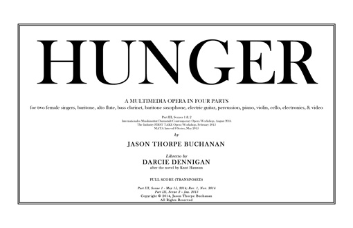

VIEW SCORE:
ABOUT THE WORK:
-
HUNGER (Part III) (2015)
-
Instrumentation: 2 sopranos, baritone, alto flute, bass clarinet, baritone saxophone, electric guitar, percussion, piano, violin, cello, electronics, and video
-
Commission & Awards: Selection, Darmstadt Contemporary Opera Workshop
Selection, FIRST TAKE New American Opera Workshop, Los Angeles
Selection, MATA Interval 8 Series, NYC -
Text by: Darcie Dennigan
-
PROGRAM NOTES:
CREATION & BRIEF SYNOPSIS:
Knut Hamsun’s novel Sult is a point of departure for a libretto by award-winning poet Darcie Dennigan, exploring themes of psychological decay, irrationality, and self-destruction. Oumenos is a starving and delusional young writer who is unwilling to compromise his work even as his intellect and body gradually deteriorate. He is split in two; the baritone and soprano form a composite, each depicting aspects of his inner/outer selves and suppressed madness. His hunger and self-disgust lead him to consider stealing bread, and to thoughts of self-mutilation. He despises his baseness. He is a dog. He is drawn to Ylajali (mezzo-soprano), a young girl who appears to him in various manifestations. At the bloodbank, Ylajali draws his blood. At the spermbank, she coaxes his orgasm. In a butchershop, Ylajali as countergirl displays the meat before him. He fights his coarseness and hungers to appear presentable, normal. He finds himself examining her on the counter as if she were meat. Humiliated by his inner self, and by Ylajali, he in turn humiliates her. He has again become, in his mind, a dog.
The complete opera in four parts is being composed over the course of several years via residencies throughout the U.S. and Europe. The first completed scene of the opera (Part III, Sc. 1) was selected for the Internationales Musikinstut Darmstadt Contemporary Opera Workshop and premiered August, 2014 in a acoustic version for three singers, alto flute, bass clarinet, percussion, piano, violin, and cello. This ensemble was augmented by the inclusion of electric guitar, baritone saxophone, live electronics, and video projection of both live capture and pre-recorded film for the L.A. premiere of Part III, Scenes 1 & 2 at The Industry’s “First Take”, and the [Switch~ Ensemble]’s NYC premiere on the MATA Interval Series at the DiMenna Center.
The score, electronics, and video for Part 1 will be finalized during a three-month residency appointed by the City Council of Bergen, Norway at USF Verftet in Fall of 2015. Our vision is a multimedia opera whose musical and dramaturgical narrative is driven not by dialogue or action, but rather psychological and musical states and situations that integrate video projection and electronics seamlessly, contextualizing the extremely fragmented music and text. While obfuscating much of the semantic content, this fragmentation and oscillation between intelligibility and unintelligibility demands a focus on phenomenological qualities and filmic subtlety, with physical, aural, and visual cues indicating context for the behavior of the singers and the interaction with their digital surroundings.
Hunger breaks with operatic conventions by eschewing grandeur and dramaturgical coherence in order to explore the volatile city of one man’s psyche. Because its true subject is, as Hamsun described, “the delicate fluctuations of a sensitive soul, the strange, peculiar life of the mind,” its narrative threads are unclassifiable and non-contiguous within the confines of conventional logic, and its protagonist is splintered and psychologically erratic, with theatrical time that is compressed through multimedia into situations that are claustrophobically intimate, constantly in flux, and contradictory. It thus invites participants to construct and engage with a multiplicity of scenarios and readings. The edge of comprehensibility itself becomes a means of producing structural integrity and coherence while reflecting the central theme of psychological deterioration and fragility.
- Jason Thorpe Buchanan & Darcie Dennigan
(September 15, 2014)
Sneak Preview MATA 2015
</html>
Performances of HUNGER (Part III)

MATA Interval 8 Series
, DiMenna Center
Benzaquen Hall
450 West 37th St
New York City, NY 10018

FIRST TAKE Opera Workshop
Wallis Annenberg Center for the Performing Arts
Los Angeles, CA
Internationales Musikinstitut Darmstadt
Darmstadt, Germany